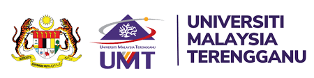
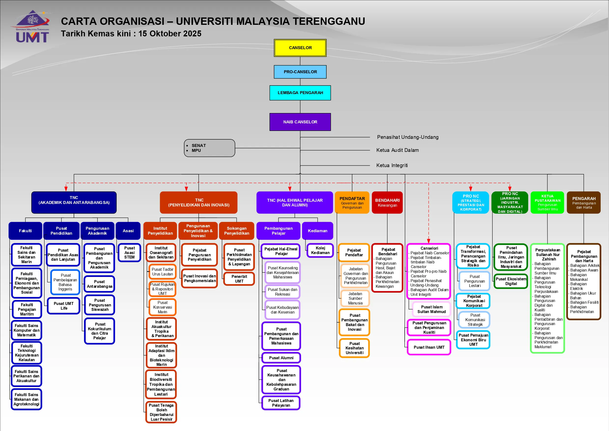

Organization Chart

Homepage
Welcome
Chancellor
UMT's Logo
About
Vision & Mission
History of UMT
Organization Chart
Study
STEM Foundation & Diploma
Bachelor
Master & Doctorate
Contact Us & Feedback
Complaint, Inquiry and Feedback Management System
Campus Map
Search
